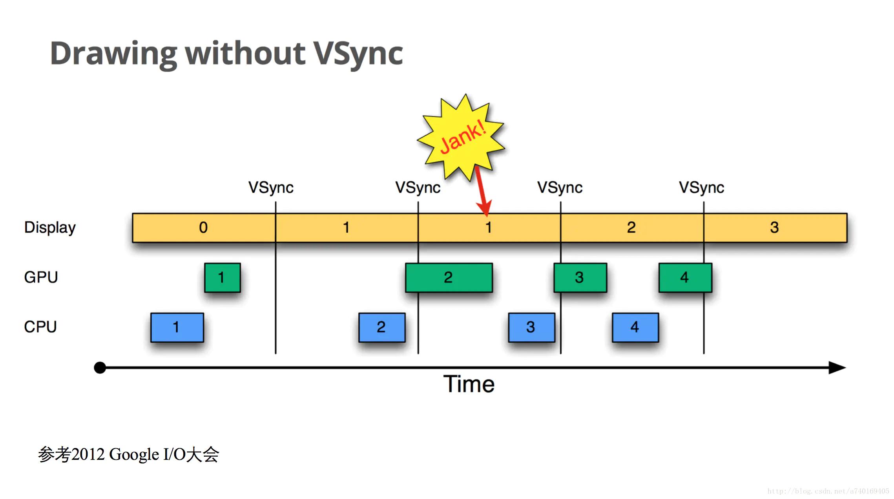
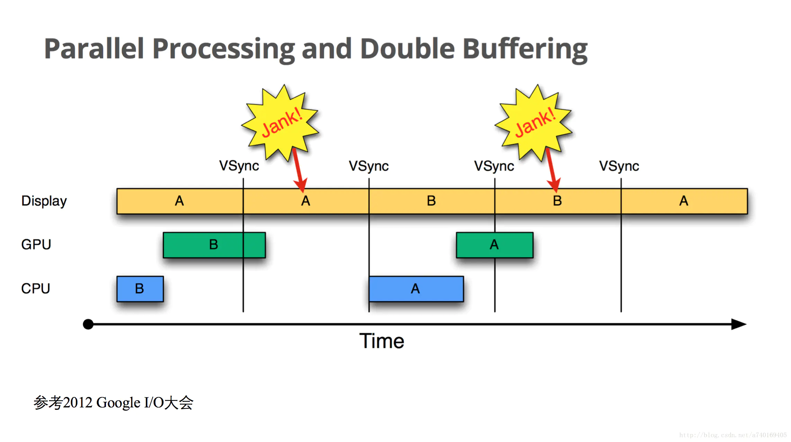

概述
Android 图形系统是 Android 中一个非常重要的子系统，它涉及到许多相当复杂的模块，如 SurfaceFlinger, Choreographer, HardWare Composer 等平时开发中基本上不会直接接触的概念。前后基于 Android 10 版本陆陆续续阅读了图形系统各个组成模块的源码，结合网上的一些博客，心中对 Android 的图形系统构成以及各个组件之间的工作流程有了一个整体的理解，这篇文章特意将整个图形系统做一个总结，可能还有所疏漏，后续发现了再接着补全。
这个系列前前后后记录了一些笔记，后续如有遗漏和错误也会接着更新：
- Android-Window机制源码解读: Android Window 相关的机制，包括 WindowManagerService 的启动，startActivity 过程中 StartingWindow 的流程，以及 startActivity 过程中与 Window 相关的流程，如 DecorView 是何时以及怎么添加的等，最后给出了 WindowManager 添加/移除/更新 View 的源码解析。
- Android-Window机制原理之Token验证: 基于源码解析关于 Android WMS 在 addWindow 的时候Token验证的逻辑，以及说明为什么不能使用 Application Context 显示 Dialog。
- Android-View绘制原理: 当接收到 Vsync信号后，App 进程调用 ViewRootImpl.performTraversals 方法来执行 View 的绘制(measure, layout, draw)流程。
- Android-View原理与实践: View 相关的一些零散知识点，对理解整个图形系统而言不重要。主要介绍了一下 View 的事件分发机制，滑动冲突，View.post 等。
- Android-SurfaceFlinger启动与工作原理: 介绍 SurfaceFlinger 的启动流程及其如何处理 Vsync 信号来合成 Layer。
- Android-Choreographer工作原理: App 进程如何通过 Choreographer 来注册和接收 Vsync 信号进而启动 View 的绘制流程。
- Android-Surface原理解析及软硬件绘制: 在 View 绘制过程中，View.draw 绘制的数据是如何能够最终被 SurfaceFlinger 合成的，其中包括 Canvas, Bitmap, Surface, Layer, Buffer 以及软硬件绘制的工作流程。
Android显示基础
参考: “终于懂了” 系列：Android屏幕刷新机制—VSync、Choreographer 全面理解！
相关概念
- 屏幕刷新频率：一秒内屏幕刷新的次数（一秒内显示了多少帧的图像），单位Hz（赫兹），如常见的60Hz，刷新频率取决于硬件的固定参数（不会变）。
- 帧率（Frame Rate）：单位fps。Android系统为60fps，即每秒钟GPU最多绘制60帧画面，帧率是动态变化的，例如当画面静止时，GPU是没有绘制操作的，屏幕刷新的还是buffer中的数据，即GPU最后操作的帧数据。
- 逐行扫描：显示器并不是一次性将画面显示到屏幕上，而是从左到右边，从上到下逐行扫描，顺序显示整屏的一个个像素点，不过这一过程快到人眼无法察觉到变化。以 60Hz 刷新率的屏幕为例，这一过程即 1000/60≈16ms。
- 画面撕裂（tearing）：一个屏幕内的数据来自2个不同的帧，画面会出现撕裂感。
画面撕裂的原因：屏幕刷新频率是固定的，比如每16.6ms从buffer取数据显示完一帧，理想情况下帧率和刷新频率保持一致，即每绘制完成一帧，显示器显示一帧。但是CPU/GPU写数据是不可控的，所以会出现buffer里有些数据根本没显示出来就被重写了，即buffer里的数据可能来自不同帧，当屏幕刷新时，此时它并不知道buffer的状态，因此从buffer抓取的帧并不是完整的一帧画面，即出现画面撕裂。即Display在显示的过程中，buffer内数据被CPU/GPU修改，导致画面撕裂。
双缓存：由于图像绘制和屏幕读取使用的是同个buffer，所以屏幕刷新时可能读取到的是不完整的一帧画面(撕裂/闪烁)。双缓存是让绘制和显示器拥有各自的buffer，GPU始终将完成的一帧图像数据写入到Back Buffer，而显示器使用Front Buffer，当屏幕刷新时，Front Buffer 并不会发生变化，当Back buffer准备就绪后，它们才进行交换。如下图所示：

VSync：如果在Back buffer准备完成一帧数据后就进行两个buffer的交换，那么若此时屏幕还没有完整显示上一帧内容就会出问题。因此只能等到屏幕处理完一帧数据后，才可以执行buffer交换的操作。当扫描完一个屏幕后，设备需要重新回到第一行以进入下一次的循环，此时有一段时间空隙，称为VerticalBlanking Interval(VBI)，这个时间点就是我们进行缓冲区交换的最佳时间。VSync(垂直同步)是VerticalSynchronization的简写，它利用VBI时期出现的vertical sync pulse（垂直同步脉冲）来保证双缓冲在最佳时间点才进行交换。另外，交换是指各自的内存地址，可以认为该操作是瞬间完成。V-sync这个概念在早年的PC机领域就已经出现了。
Android 4.1之前：在Android4.1之前，屏幕刷新也遵循上面的双缓存+VSync机制。如下图：

从时间顺序来看：
- Display显示第0帧数据，此时CPU和GPU渲染第1帧画面，且在Display显示下一帧之前完成；
- Display在第0帧显示完成后，即第1个VSync时，缓存进行交换，正常显示第1帧；
- 接着第2帧开始处理，可能由于某些原因，直到第2个VSync快来前才开始处理这一帧数据，导致第2个VSync来时，第2帧数据还没有准备就绪，缓存没有交换，显示的还是第1帧。这种情况即丢帧(Jank)；
- 当第2帧数据准备完成后，它并不会马上被显示，而是要等待下一个VSync进行缓存交换再显示。
所以屏幕会平白多显示了一次第1帧，原因是第2帧的CPU/GPU计算没能在VSync信号到来前完成。
双缓存的交换是在Vsyn到来时进行，交换后屏幕会取Front buffer内的新数据，而实际上此时的Back buffer已经可以供GPU准备下一帧数据了。如果Vsyn到来时 CPU/GPU就开始操作的话，是有完整的16.6ms的，这样会很大程度地减小jank的出现(除非CPU/GPU计算超过了16.6ms)。
Android 4.1之后：实现了Project Butter（黄油工程），drawing with VSync，系统在收到VSync pulse后，将马上开始下一帧的渲染。即一旦收到VSync通知（16ms触发一次），CPU和GPU立刻开始计算然后把数据写入buffer。如下图：

CPU/GPU根据Vsync信号处理数据，可以让CPU/GPU有完整的16.6ms时间来处理数据，减少了jank，然而如果CPU/GPU的处理时间超过了16.6ms，则如下图：

- 在第二个时间段内，因为GPU还在处理B帧，缓存没能交换，导致A帧被重复显示；
- 而B帧完成后，又因为缺乏VSync pulse信号，它只能等待下一个signal的来临，这一过程中，有一大段时间是被浪费的；
- 当下一个VSync出现时，CPU/GPU马上执行操作（A帧），且缓存交换，相应的显示屏对应的就是B，这时看起来就是正常的。只不过由于执行时间仍然超过16ms，导致下一次应该执行的缓冲区交换又被推迟了。如此循环反复，便出现了越来越多的Jank。
由于只有两个buffer，Back buffer正在被GPU用来处理B帧的数据，Front buffer的内容用于Display的显示，两个buffer都被占用，因此CPU无法准备下一帧的数据。
三缓存(Tripple Buffer)：在双缓冲机制基础上增加了一个Graphic Buffer缓冲区，CPU、GPU和显示设备都能使用各自的buffer工作，互不影响，优点是能最大限度利用空闲时间，缺点是会多占用一个Graphic Buffer大小的内存。如下图：

第一个Jank不可避免，但是在第二个16ms时间段，CPU/GPU使用第三个Buffer完成C帧的计算，虽然还是会多显示一次A帧，但后续显示就比较顺畅了，有效避免Jank的进一步加剧。
三缓冲有效利用了等待Vsync的时间，减少了Jank，但是带来了延迟。所以，Buffer正常情况下还是两个，当出现Jank后三个足以。
小结
- 当扫描完一个屏幕后，设备需要重新回到第一行以进入下一次的循环，此时会出现的vertical sync pulse（垂直同步脉冲）来保证双缓冲在最佳时间点才进行交换。且Android 4.1后CPU/GPU的绘制是在VSYNC到来时开始。
- 双缓存是Back buffer, Front buffer，用于解决画面撕裂；三缓存增加一个Back buffer，用于减少Jank。
- 丢帧(掉帧)是说这一帧延迟显示了，因为缓存交换的时机只能等下一个VSync。
- 只有当 App 注册监听下一个 Vsync 信号后才能接收到 Vsync 到来的回调。如果界面一直保持不变，那么 App 不会去接收每隔 16.6ms 一次的 Vsync 事件，但底层依旧会以这个频率来切换每一帧的画面(也是通过监听 Vsync 信号实现)。即当界面不变时屏幕也会固定每 16.6ms 刷新，但 CPU/GPU 不走绘制流程。
- 当 View 请求刷新时，这个任务并不会马上开始，而是需要等到下一个 Vsync 信号到来时才开始；measure/layout/draw 流程运行完后，界面也不会立刻刷新，而会等到下一个 VSync 信号到来时才进行缓存交换和显示。
Android图形组件
参考: Android-Graphics
开发者可通过三种方式将图像绘制到屏幕上：Canvas, OpenGL ES 或 Vulkan。无论使用什么渲染API，一切内容都会渲染到Surface，Surface 表示 BufferQueue 中的生产方，而 BufferQueue 通常被 SurfaceFlinger 消费。在 Android 平台上创建的每个 Window 都由 Surface 提供支持，所有被渲染的可见 Surface 都被 SurfaceFlinger 合成到显示部分。
下图显示了关键组件如何协同工作：

相关组件如下：
- Image Stream Producers: 图像流生产方可以是生成图形缓冲区以供消费的任何内容，例如 OpenGL ES、Canvas 2D 和 mediaserver 视频解码器。
- Image Stream Consumers: 图像流最常见的消费者是 SurfaceFlinger，该系统服务会消费当前可见的 Surface，并使用 WindowManager 中提供的信息将它们合成交到 Display。SurfaceFlinger 使用 OpenGL 和 HardWare Composer 来合成 Surface。其他 OpenGL ES 应用也可以消费图像流，例如相机应用会消费相机预览图像流；非 GL 应用也可以是使用方，例如 ImageReader 类。
- Hardware Composer: 这是显示子系统的硬件抽象层，SurfaceFlinger 可以将某些合成工作委托给 Hardware Composer，以分担 OpenGL 和 GPU 上的工作量。SurfaceFlinger 在收集可见层的所有缓冲区之后会询问 Hardware Composer 应如何进行合成。
- Gralloc: 使用图形内存分配器 (Gralloc) 来分配图像生产方请求的内存。
BufferQueue
Android 图形数据流管道如下图：

左侧的对象是生成图形缓冲区的渲染器，如主屏幕、状态栏和系统界面。SurfaceFlinger 是合成器，而 Hardware Composer 是制作器。BufferQueue 是 Android 图形系统很重要的组成部分，它负责数据的传递：

图中的 producer 和 consumer 运行在不同的进程里，BufferQueue 是将缓冲区池与队列相结合的数据结构，它使用 Binder IPC 在进程之间传递缓冲区。几个重要函数如下：
- producers 通过 BufferQueue 请求一块空闲的缓存区(GraphicBuffer): IGraphicBufferProducer.dequeueBuffer 方法
- 往缓存区(GraphicBuffer)填充了数据(绘制等)后, producers 将缓存区(GraphicBuffer)入队列到 BufferQueue 中: IGraphicBufferProducer.queueBuffer 方法
- consumer 从 BufferQueue 中出队列一块缓存区(GraphicBuffer): IGraphicBufferConsumer.acquireBuffer 方法
- consumer 消费完毕后(典型的是 SurfaceFlinger 合成数据)将缓存区(GraphicBuffer)返回给队列: IGraphicBufferConsumer.releaseBuffer 方法
其中 IGraphicBufferProducer 是 BufferQueue 的生产者接口，实现类是 BufferQueueProducer 生产者类；IGraphicBufferConsumer 是 BufferQueue 的消费者接口，实现类是 BufferQueueConsumer 消费者类。
查看 BufferQueue 相关的源码，可以在 frameworks/native/libs/gui/include/gui/BufferSlot.h 注释中看到 GraphicBuffer 有几种状态：
- FREE: 该 Buffer 没有被 producer/consumer 所使用，其所有权属于 BufferQueue
- DEQUEUED: 该 Buffer 被 producer 获取了，其所有权属于 producer
- QUEUED: 该 Buffer 被 producer 填充了数据且入队列到 BufferQueue 了，其所有权属于 BufferQueue
- ACQUIRED: 该 Buffer 被 consumer 获取了，该Buffer的所有权属于 consumer
- SHARED: 该 Buffer 处于 shared buffer 模式
之所以需要这些状态，应该是为了维护一个 buffer pool 的结构，而不是每次使用 Buffer 时便创建一段共享内存，使用完毕便释放之，效率较低。
GraphicBuffer 状态的变化过程: FREE -> dequeueBuffer() -> DEQUEUED -> queueBuffer() -> QUEUED -> acquireBuffer() -> ACQUIRED -> releaseBuffer() -> FREE.
至于 BufferQueue 相关的源码，有兴趣可以深入查阅。
相关概念
- View: 视图，绘制到屏幕上的内容，如 TextView, ImageView 等。
- Window: View 的载体，对 Window 进行添加和删除需要通过 WindowManager 来操作。Window 并不是真实存在的，View 才是 Android 中的视图呈现形式，View 不能单独存在，它必须依附在 Window 这个抽象的概念上面。
- WindowManager: 管理系统中的 Window, 实际功能通过 Binder IPC 借由 WindowManagerService 实现。
- Canvas: 提供一些对 Surface 绘图的 API 用来进行实际的绘图操作。如果是软件绘制，其 drawXXX 方法会将内容绘制到 Bitmap 上；如果是硬件绘制，其 drawXXX 方法会抽象成 DrawOp 操作，然后添加到 DisplayList 中被 GPU 渲染。
- Surface: 一个 Window 对应一个 Surface(当存在 SurfaceView 则例外，Java Surface 实例存在于 ViewRootImpl 中，对应 native 层的 Surface 对象)。Surface 内部持有一个 BufferQueueProducer 指针(在 Layer 中创建)可以生产图像缓存区用来绘图，与 App 和 SurfaceFlinger 形成一个生产者消费者模型。
- Layer: App 请求创建 Surface 时 SurfaceFlinger 会创建 Layer 对象，它是 SurfaceFlinger 合成的基本操作单元，因此一个 Surface 对应一个 Layer。它创建有一个 BufferQueueProducer 生产者和 BufferQueueConsumer 消费者，这两个对象与像素数据的存储与转移相关。用户最终看到的屏幕内容是许多 Layer 按照 z-order 混合的结果。
- SurfaceView: 一种较之 TextView, Button 等更为特殊的 View, 它不与其宿主的 Window 共享一个 Surface, 而是有自己的独立 Surface。并且它可以在一个独立的线程中绘制 UI。因此 SurfaceView 一般用来实现比较复杂的图像或动画/视频的显示。
- Choreographer: 编舞者，用来控制当收到 VSync 信号后才开始绘制任务，保证绘制拥有完整的16.6ms。通常应用层不会直接使用Choreographer，而是使用更高级的API，如View.invalidate()等，可以通过Choreographer来监控应用的帧率。
- SurfaceFlinger: 管理消费当前可见的 Surface，所有被渲染的可见 Surface 都被 SurfaceFlinger，通过 WindowManager 提供的信息合成(使用 OpenGL 和 HardWare Composer，合成的数据源是上面提及的 BufferQueue 中的 GraphicBuffer)提交到屏幕的后缓冲区，等待屏幕的下一个Vsync信号到来，再显示到屏幕上。SufaceFlinger 通过屏幕后缓冲区与屏幕建立联系，同时通过 Surface 与上层建立联系，起到了一个承上启下的作用。
- HWComposer: HardWare Composer, 定义一套 HAL 层接口，芯片厂商根据硬件特点来实现这套接口。其主要工作是将 SurfaceFlinger 计算后的 Layer 显示参数合成到显示器 Buffer 上。当然 SurfaceFlinger 并非是 HWC 的唯一输入源，例如摄像头的预览输入 Buffer 可以由硬件设备直接写入，然后作为 HWC 的输入之一与 SurfaceFlinger 的输出做最后的合成。
- OpenGL: 一个 2D/3D 的图形库，需要底层硬件(GPU)和驱动来支持。移动端通常使用其子集 OpenGl ES(OpenGl for Embedded System)。
- Display: 显示设备的抽象，传统的 Display 设备是手机屏，此外 Android 也支持其他的外部输入设备如 HDMI, Wifi Display 等，将 SurfaceFlinger, OpenGL, HWComposer 合成后的数据输出到 Display 设备的缓存区用来显示。
SurfaceFinger工作流程
详细文章见 Android-SurfaceFlinger启动与工作原理
surfaceflinger 是在 Android 系统启动时解析 init.rc 文件启动的守护进程，在 SurfaceFlinger 的启动流程中：
- 首先会创建 SurfaceFlinger 对象，在构造器中创建了 DispSync 同步模型对象；
- 然后执行初始化 SurfaceFlinger 的逻辑：
- 注册监听，接收 HWC 的相关事件。
- 启动 APP 和 SF 的 EventThread 线程，用来管理基于 DispSync 创建的两个 DispSyncSource 延时源对象，分别是用于绘制(app–mEventThreadSource)和合成(SurfaceFlinger–mSfEventThreadSource)。启动了 EventThread 线程后，会一直阻塞在 waitForEventLocked 方法中(期间会根据需要设置监听器)，直到接收到 Vsync 信号且至少有一个连接正在等待 Vsync 信号才会继续执行线程逻辑，即通知监听者；
- 通过 MessageQueue.setEventThread 方法创建了一个连接，并通过 Looper.addFd 方法监听 BitTube 数据。
- 创建 HWComposer 对象(通过 HAL 层的 HWComposer 硬件模块 或 软件模拟产生 Vsync 信号)，现在的 Android 系统基本上都可以看成是通过硬件 HWComposer 产生 Vsync 信号，而不使用软件模拟，所以下面解析都只谈及硬件 HWComposer 的 Vsync 信号；
- 初始化非虚拟的显示屏；
- 启动开机动画服务；
- 最后执行 SurfaceFlinger.run 逻辑，该方法会在 SurfaceFlinger 主线程通过死循环执行 MessageQueue.waitMessage 方法等待消息的到来，其内部调用了 Looper.pollOnce 方法，该方法会从 Looper.addFd 方法监听的 BitTube 中读取数据，当有数据到来时执行对应的回调方法。
当硬件或软件模拟发出 Vsync 信号时：
- 回调 SF 相关方法，SF 调用 DispSync 同步模型的方法处理 Vsync 信号(统计和计算模型的偏移和周期)，并根据返回值判断是否使能/关闭 HWC Vsync 信号的发出。
- DispSync 根据计算的偏移和周期计算下次 Vsync 信号发生时间，并通知监听者 Vsync 信号到达的事件，传递给 DispSyncSource 延时源，延时源通过 EventThread 来管理 Vsync 信号的收发。
- EventThread 调用连接 Connection 对象向 BitTube 发送数据，触发 addFd 函数中设置的回调方法，回调方法进而调用 SF.onMessageReceived 函数，然后进行图像的合成等工作。
另一方面，Choreographer 会通过上面创建的 APP 延时源 mEventThreadSource 对象及其对应的 EventThread 线程来监听同步模拟发出的 Vsync 信号，然后进行绘制(measure/layout/draw)操作。具体逻辑见 Android-Choreographer原理。
将 SurfaceFlinger 的工作流程总结如下图：

Choreographer工作流程
详细文章见 Android-Choreographer工作原理
- Choreographer: 使 CPU/GPU 的绘制是在 VSYNC 到来时开始。Choreographer 初始化时会创建一个表示对 Vsync 信号感兴趣的连接，当有绘制请求时通过 postCallback 方法请求下一次 Vsync 信号，当信号到来后才开始执行绘制任务。
- 只有当 App 注册监听下一个 Vsync 信号后才能接收到 Vsync 到来的回调。如果界面一直保持不变，那么 App 不会去接收每隔 16.6ms 一次的 Vsync 事件，但底层依旧会以这个频率来切换每一帧的画面(也是通过监听 Vsync 信号实现)。即当界面不变时屏幕也会固定每 16.6ms 刷新，但 CPU/GPU 不走绘制流程。
- 当 View 请求刷新时，这个任务并不会马上开始，而是需要等到下一个 Vsync 信号到来时才开始；measure/layout/draw 流程运行完后，界面也不会立刻刷新，而会等到下一个 VSync 信号到来时才进行缓存交换和显示。
- 造成丢帧主要有两个原因：一是遍历绘制 View 树以及计算屏幕数据超过了16.6ms；二是主线程一直在处理其他耗时消息，导致绘制任务迟迟不能开始(同步屏障不能完全解决这个问题)。
- 可通过Choreographer.getInstance().postFrameCallback()来监听帧率情况。
阅读这篇文章建议先阅读 Android-SurfaceFlinger启动与工作原理 这篇文章，然后结合 Choreographer 的工作流程，可以对 Vsync 信号是怎么协调 App 端的绘制任务以及 SurfaceFlinger 的合成任务有一个比较清晰的认识。
用一张图总结一下 Choreographer 的工作流程：

View绘制流程
详细文章见 Android-Window机制源码解读 和 Android-View绘制原理
在 Choreographer 接收到 Vsync 信号后便开始 View 的绘制过程，即老生常谈的 measure, layout, draw 三大步骤。
Surface工作流程及软硬件绘制
详细文章见 Android-Surface原理解析及软硬件绘制
在 View 的 draw 过程中会接触到 Surface 的逻辑，通过它可以向 SurfaceFlinger 申请一块缓存区用来绘制。绘制任务可以分为软件绘制与硬件绘制两种。
- Java 层的 Surface 对象中 mNativeObject 属性指向 native 层中创建的 Surface 对象。
- Surface 对应 SurfaceFlinger 中的 Layer 对象，它持有 Layer 中的 BufferQueueProducer 指针(生产者)，通过这个生产者对象可以在绘制时向 BufferQueue 申请一块空闲的图形缓存区 GraphicBuffer，在 Surface 上绘制的内容会存入该缓存区内。
- SurfaceFlinger 通过 BufferQueueConsumer 消费者从 BufferQueue 中取出 GraphicBuffer 中的数据进行合成渲染并送到显示器显示。
软件绘制
软件绘制可能会绘制到不需要重绘的视图，且其绘制过程在主线程进行的，可能会造成卡顿等情况。它把要绘制的内容写进一个 Bitmap 位图，其实就是填充到了 Surface 申请的图形缓存区里。
软件绘制可分为三个步骤：
- Surface.lockCanvas – dequeueBuffer 从 BufferQueue 中出队列一块缓存区。
- View.draw – 绘制内容。
- Surface.unlockCanvasAndPost – queueBuffer 将填充了数据的缓存区存入 BufferQueue 队列中，然后通知给 SurfaceFlinger 进行合成(请求 Vsync 信号)。
硬件绘制
硬件绘制会将绘制函数作为绘制指令(DrawOp)记录在一个列表(DisplayList)中，然后交给单独的 Render 线程使用 GPU 进行硬件加速渲染。它只需要针对需要更新的 View 对象的脏区进行记录或更新，无需更新的 View 对象则能重用先前 DisplayList 中记录的指令。
硬件绘制可分为两个阶段：
- 构建阶段：将 View 的绘制操作(drawLine…)抽象成 DrawOp 操作并存入 DisplayList 中。
- 绘制阶段：首先分配缓存区(同软件绘制)，然后将 Surface 绑定到 Render 线程，最后通过 GPU 渲染 DrawOp 数据。
硬件加速的内存申请跟软件绘制一样都是借助 Layer 中的 BufferQueueProducer 生产者从 BufferQueue 中出队列一块空闲缓存区 GraphicBuffer 用来渲染数据的，之后也都会通知 SurfaceFlinger 进行合成。不一样的地方在于硬件加速相比软件绘制而言算法可能更加合理，同时采用了一个单独的 Render 线程，减轻了主线程的负担。
双缓冲
一般来说将双缓冲用到的两块缓冲区称为 – 前缓冲区(front buffer) 和 后缓冲区(back buffer)。显示器显示的数据来源于 front buffer 前缓存区，而每一帧的数据都绘制到 back buffer 后缓存区，在 Vsync 信号到来后会交互缓存区的数据(指针指向)，这时 front buffer 和 back buffer 的称呼及功能倒转。
在 View 的绘制过程中 Surface 使用了双缓冲技术。
SurfaceView
SurfaceView 就是一块拥有自己独立 Surface 的特殊 View 视图，由于这个特性，它一般用来实现比较复杂的图像或动画/视频的显示。
用一张图总结一下 Android 软硬件绘制的流程：

图形系统工作流程总结
用一张图总结一下图形系统工作的整体流程：